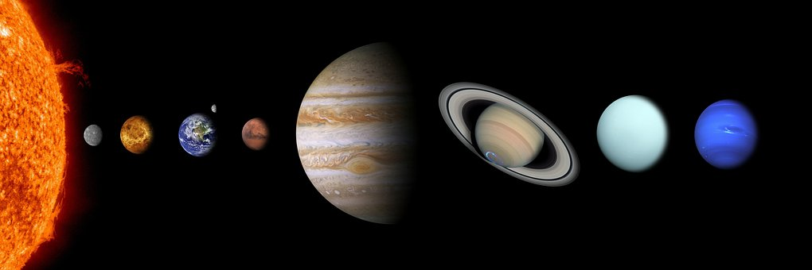

El Sistema Solar es un sistema planetario de la galaxia Vía Láctea que se encuentra en uno de los brazos de ésta, conocido como el Brazo de Orión.
Está formado por una única estrella llamada Sol, la cual le da nombre a este sistema, y ocho planetas, más el conjunto de planetas enanos que orbitan alrededor de la estrella, de los cuales los más conocidos son: Plutón, (136199) Eris, Makemake, Haumea y Ceres; al igual que el espacio interplanetario comprendido entre ellos. En la actualidad se conocen también otros 283 sistemas planetarios orbitando alrededor de otras estrellas de los cuales de 23 se conocen dos exoplanetas, de 9 se conocen tres, de uno se conocen cuatro y de otro cinco.
Según las últimas estimaciones, el Sistema Solar se encuentra a unos 28 mil años-luz del centro de la Vía Láctea, nuestra galaxia.
Los planetas, la mayoría de los planetas y todos los cinturones de asteriodes orbitan alrededor del Sol, en la misma dirección siguiendo órbitas elípticas en sentido antihorario si se observa desde encima del polo norte del Sol. El plano aproximado en el que giran todos estos se denomina eclíptica. Algunos objetos orbitan con un grado de inclinación considerable, como Plutón con una inclinación con respecto al eje de la eclíptica de 18º, así como una parte importante de los objetos del cinturón de Kuiper. Según sus características, y avanzando del interior al exterior, los cuerpos que forman el Sistema Solar se clasifican en:
Las órbitas de los planetas mayores se encuentran ordenadas a distancias del Sol crecientes de modo que la distancia de cada planeta es aproximadamente el doble que la del planeta inmediatamente anterior. Esta relación viene expresada matemáticamente a través de la ley de Titius-Bode, una fórmula que resume la posición de los semiejes mayores de los planetas en Unidades Astronómicas. En su forma simple se escribe
Para tener una noción de la dimensión astronómica de las distancias en el espacio, es interesante hacer unos cálculos y hacernos de un modelo que nos permita tener una percepción más clara de lo que está en juego. Imaginemos, por ejemplo, un modelo reducido en el que el Sol estaría representado por una pelota de fútbol (de 22 cm de diámetro). A esa escala, la Tierra estaría a 23,6 m de distancia y sería una esfera con apenas 2 mm de diámetro (la Luna estaría a unos 5 cm de la tierra y tendría un diámetro de unos 0,5 mm) . Júpiter y Saturno serian bolitas con cerca de 2 cm de diámetro, a 123 y a 226 m del Sol respectivamente. Plutón estaría a 931 m del Sol, con cerca de 0,3 mm de diámetro. En cuanto la estrella más próxima (Próxima Centauri) estaría a 6.332 km del Sol, y la estrella Sirio a 13.150 km.
El Sol es la estrella del sistema planetario en el que se encuentra la Tierra; por tanto, es la más cercana a la Tierra y el astro con mayor brillo aparente. Su presencia o su ausencia en el cielo determinan, respectivamente, el día y la noche. La energía radiada por el Sol es aprovechada por los seres fotosintéticos, que constituyen la base de la cadena trófica, siendo así la principal fuente de energía de la vida. También aporta la energía que mantiene en funcionamiento los procesos climáticos. El Sol es una estrella que se encuentra en la fase denominada secuencia principal, con un tipo espectral G2, que se formó hace unos 5000 millones de años y permanecerá en la secuencia principal aproximadamente otros 5000 millones de años. El Sol, junto con la Tierra y todos los cuerpos celestes que orbitan a su alrededor, forman el Sistema Solar.
El 24 de agosto de 2006, en Praga, en la XXVI Asamblea General la Unión Astronómica Internacional (UAI), se excluyó a Plutón como planeta del Sistema Solar. Tras una larga controversia sobre esta resolución, se tomó la decisión por unanimidad. Con esto se reconoce el error de haber otorgado la categoría de planeta a Plutón en 1930, año de su descubrimiento. Desde ese día el Sistema Solar queda compuesto por 8 planetas.
Los 8 planetas del Sistema Solar, de acuerdo con su cercanía al Sol, son: Mercurio, Venus, Tierra, Marte, Júpiter, Saturno, Urano y Neptuno. Los planetas son astros que describen trayectorias llamadas órbitas al girar alrededor del Sol, tienen suficiente masa para que su gravedad supere las fuerzas del cuerpo rígido, de manera que asuman una forma en equilibrio hidrostático (prácticamente esférica) y han limpiado la vecindad de su órbita de planetesimales.
A Saturno, Júpiter, Urano y Neptuno los científicos los han denominado planetas gaseosos por contener en sus atmósferas gases como el helio, el hidrógeno y el metano, sin saber a ciencia cierta la estructura de su superficie.
Poco después de su descubrimiento en 1930, Plutón fue clasificado como un planeta por la Unión Astronómica Internacional (UAI). Sin embargo, basándose en descubrimientos posteriores, se abrió un debate por algunos, con objeto de reconsiderar dicha decisión. Finalmente, el 24 de agosto de 2006 la UAI decidió que el número de planetas no se ampliará a 12, como se propuso en la reunión que mantuvieron sus miembros en Praga, sino que debía reducirse de 9 a 8. El gran perjudicado de este nuevo orden cósmico fue, nuevamente, el polémico Plutón, cuyo pequeño tamaño y su evolución dinámica en el Sistema Solar llevó a los miembros de la UAI a excluirlo definitivamente de su nueva definición de planeta.
| Planetas | Radio Ecuador (en km.) | Distancia al Sol (en km.) | Lunas |
| Mercurio | 2.440 | 57.910.000 | 0 |
| Venus | 6.052 | 108.200.000 | 0 |
| La tierra | 6.378 | 149.600.000 | 1 |
| Marte | 3.397 | 227.940.000 | 2 |
| Júpiter | 71.492 | 778.330.000 | 79 |
| Saturno | 60.268 | 1.429.400.000 | 82 |
| Urano | 25.559 | 2.870.990.000 | 27 |
| Neptuno | 24.746 | 4.504.300.000 | 14 |
| Plutón | 1.160 | 5.913.520.000 | 5 |